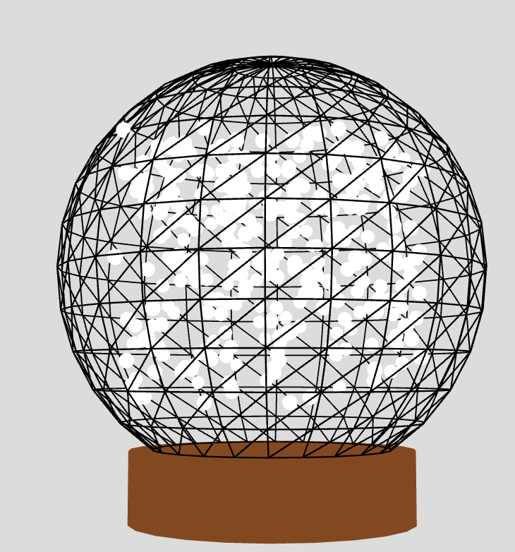

Experiment 5 - 3D Graphics
Imitate
I was not inspired by a particular, existing 3D design. Instead, I ran with the idea of making a snowglobe as winter is coming to an end.
Integrate
In this design, I've created an interactive scene where different elements come together to create a wintery environment. The key components include a snow globe that can be rotated using mouse interaction, snowflakes falling inside the globe, a snowman standing within the globe, and a circle of trees surrounding the globe on the outside.
The integration of these elements is achieved through a combination of object-oriented programming and p5.js functionalities. Each element, such as the snow globe, snowflakes, snowman, and trees, is represented as a separate class with its own properties and behaviors. These classes interact with each other by updating their positions, orientations, and appearances based on user input or predefined rules.
For example, when the mouse is pressed, the snow globe and snowman rotate based on the movement of the mouse, while the snowflakes and trees adjust their positions accordingly to maintain their relative positions to the globe. Additionally, the scene is dynamic, with new snowflakes being created periodically to simulate continuous snowfall.
Overall, by combining these different elements and techniques, I've created an engaging and interactive scene that brings together various elements of a winter landscape, allowing users to explore and interact with the scene in a visually appealing way.
Starting off with making basic shapes like a sphere and a cylinder made it easy to implement the rest of the objects as shown in the image above.
Innovate
Starting with this code as a foundation, I envision creating a virtual winter wonderland experience that immerses users in an interactive and magical environment. Building upon the rotating snow globe concept, I would expand the scene to include various interactive elements and storytelling opportunities.
One idea is to introduce seasonal activities like ice skating or sledding, where users can control the movements of characters or objects within the scene. These activities could be integrated seamlessly with the existing snowfall dynamics and the ability to rotate the snow globe, offering users a dynamic and engaging experience.
Furthermore, I would explore adding atmospheric effects such as changing weather conditions, like snowstorms or clear skies, to enhance the realism and atmosphere of the scene. Additionally, integrating ambient sound effects, such as the crunch of snow underfoot or the sound of wind whistling through the trees, could further enhance the immersive quality of the experience.
Another direction would be to incorporate a narrative element into the scene, where users can uncover clues or solve puzzles hidden within the winter landscape. This could involve interactions with characters or objects in the scene, leading to the discovery of hidden treasures or the unfolding of a larger story.
Overall, by leveraging the foundational elements of the rotating snow globe, including the snowfall, snowman, and surrounding trees, I aim to create a unique and captivating experience that transports users to a magical winter world filled with wonder and adventure.
Reflection
Creating this interactive art piece was both challenging and rewarding. One of the highs was seeing the snowflakes falling realistically within the snow globe, adding a dynamic and immersive element to the scene. Experimenting with the rotation of the snow globe and the snowman added another layer of interactivity, allowing users to manipulate the environment and explore different perspectives. Additionally, designing the trees surrounding the snow globe was enjoyable, as it contributed to the winter wonderland atmosphere I wanted to achieve.
However, there were also some lows during the creation process. Integrating the mouse interaction for rotating the snow globe and the snowman required careful adjustment to ensure smooth and intuitive control, which took some trial and error to get right. Managing the complexity of the code, especially when dealing with multiple objects interacting in a three-dimensional space, posed a challenge at times and required meticulous debugging to resolve issues with positioning and movement. Overall, while there were obstacles along the way, overcoming them and seeing the final result come together was incredibly satisfying.
Results
Hold down and drag the mouse button.
Press RETURN to reset the scene.